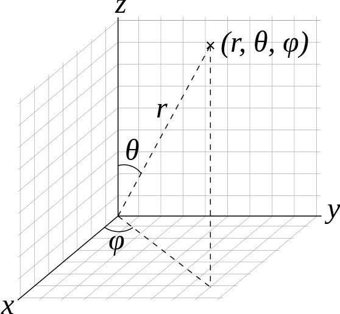
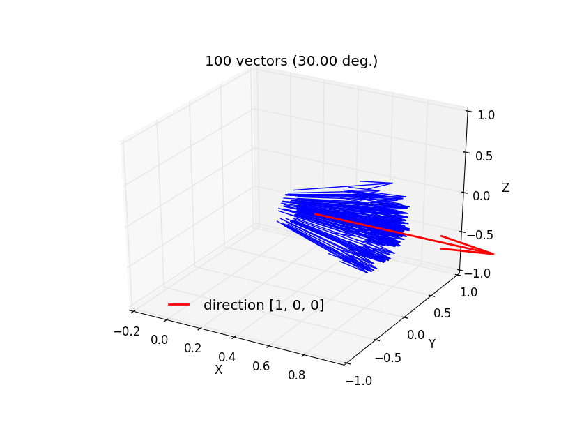
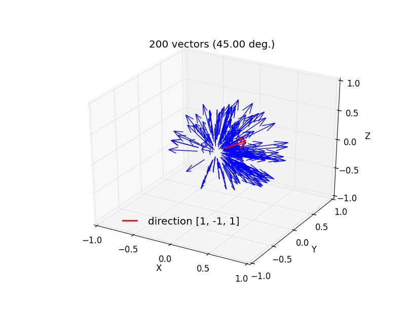
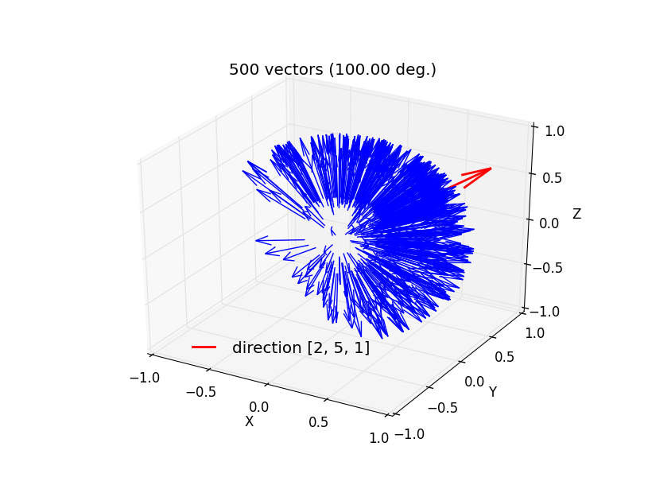
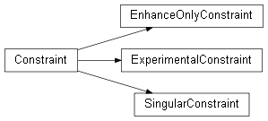
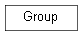
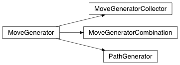

fullrmc.Core package¶
Collection¶
It contains a collection of methods and classes that are useful for the package.
- class fullrmc.Core.Collection.Broadcaster¶
Bases: object
A broadcaster broadcasts a message to all listener throughout execution.
- add_listener(listener)¶
Add listener to the list of listeners
Parameters: - listener (object): Any python object having a listen method.
- broadcast(message, arguments=None)¶
Broadcast a message to all the listeners
Parameters: - message (object): Any type of message object to pass to the listeners.
- arguments (object): Any type of argument to pass to the listeners.
- remove_listener(listener)¶
Remove listener to the list of listeners
Parameters: - listener (object): The listener object to remove.
- fullrmc.Core.Collection.SingletonDecorator(cls)¶
A class singleton decorator.
- fullrmc.Core.Collection.generate_points_on_sphere(thetaFrom, thetaTo, phiFrom, phiTo, npoints=1, check=False)¶
Generate random points on a sphere of radius 1. Points are generated using spherical coordinates arguments as in figure below. Theta [0,Pi] is the angle between the generated point and Z axis. Phi [0,2Pi] is the angle between the generated point and x axis.
Parameters: - thetaFrom (number): The minimum theta value.
- thetaTo (number): The maximum theta value.
- phiFrom (number): The minimum phi value.
- phiTo (number): The maximum phi value.
- npoints (integer): The number of points to generate
- check (boolean): whether to check arguments before generating points.
Returns: - x (numpy.ndarray): The (npoints,1) numpy array of all generated points x coordinates.
- y (numpy.ndarray): The (npoints,1) numpy array of all generated points y coordinates.
- z (numpy.ndarray): The (npoints,1) numpy array of all generated points z coordinates.
{kind=link}
- fullrmc.Core.Collection.generate_vectors_in_solid_angle(direction, maxAngle, numberOfVectors=1, check=False)¶
Generate random vectors that satisfy angle condition with a direction vector. Angle between any generated vector and direction must be smaller than given maxAngle.
a) 100 vectors generated around OX axis within a maximum angle separation of 30 degrees.
b) 200 vectors generated around [1,-1,1] axis within a maximum angle separation of 45 degrees.
b) 500 vectors generated around [2,5,1] axis within a maximum angle separation of 100 degrees.
Parameters: - direction (number): The direction around which to create the vectors.
- maxAngle (number): The maximum angle allowed.
- numberOfVectors (integer): The number of vectors to generate.
- check (boolean): whether to check arguments before generating vectors.
Returns: - vectors (numpy.ndarray): The (numberOfVectors,3) numpy array of generated vectors.
{kind=link}
{kind=link}
{kind=link}
- fullrmc.Core.Collection.get_elapsed_time(start, format='%d days, %d hours, %d minutes, %d seconds')¶
Gets formated time elapsed.
Parameters: - start (time.time): A time instance.
- format (string): The format string. must contain exactly four ‘%d’.
- fullrmc.Core.Collection.get_path(key=None)¶
get all information needed about the script, the current, and the python executable path.
Parameters: key (None, string): the path to return. If not None, it can take any of the following:
- cwd: current working directory
- script: the script’s total path
- exe: python executable path
- script_name: the script name
- relative_script_dir: the script’s relative directory path
- script_dir: the script’s absolute directory path
- fullrmc: fullrmc package path
Returns: - path (dictionary, value): If key is not None it returns the value of paths dictionary key. Otherwise all the dictionary is returned.
- fullrmc.Core.Collection.get_principal_axis(coordinates, weights=None)¶
Calculates the principal axis of a set of atoms coordinates
Parameters: coordinates (np.ndarray): The atoms coordinates.
- weights (numpy.ndarray, None): the list of weights for the COM calculation.
Must be a numpy.ndarray of numbers of the same length as indexes. None is accepted for equivalent weighting.
Returns: - center (numpy.ndarray): the geometric center of the records.
- eval1 (fullrmc.Globals.FLOAT_TYPE): the biggest eigen value.
- eval2 (fullrmc.Globals.FLOAT_TYPE): the second biggest eigen value.
- eval3 (fullrmc.Globals.FLOAT_TYPE): the smallest eigen value.
- axis1 (numpy.ndarray): the principal axis corresponding to the biggest eigen value.
- axis2 (numpy.ndarray): the principal axis corresponding to the second biggest eigen value.
- axis3 (numpy.ndarray): the principal axis corresponding to the smallest eigen value.
- fullrmc.Core.Collection.get_random_perpendicular_vector(vector)¶
Get random normalized perpendicular vector to a given vector.
Parameters: - vector (numpy.ndarray, list, set, tuple): the vector to compute a random perpendicular vector to it
Returns: - perpVector (numpy.ndarray): the perpendicular vector of type fullrmc.Globals.FLOAT_TYPE
- fullrmc.Core.Collection.get_rotation_matrix(rotationVector, angle)¶
Calculates the rotation (3X3) matrix about an axis by a rotation angle.
Parameters: - rotationVector (list, tuple, numpy.ndarray): the rotation vector coordinates.
- angle (float): the rotation angle in rad.
Returns: - rotationMatrix (numpy.ndarray): the (3X3) rotation matrix
- fullrmc.Core.Collection.is_integer(number, precision=1e-09)¶
check if number is convertible to integer.
Parameters: - number (str, number): input number
- precision (number): To avoid floating errors, a precision should be given.
Returns: - result (bool): True if convertible, False otherwise
- fullrmc.Core.Collection.is_number(number)¶
check if number is convertible to float.
Parameters: - number (str, number): input number
Returns: - result (bool): True if convertible, False otherwise
- fullrmc.Core.Collection.orient(xyzArray, arrayAxis, alignToAxis)¶
Rotates xyzArray using the rotation matrix that rotates and aligns arrayAxis to alignToAXis.
Parameters: - xyzArray (numpy.ndarray): the xyz (N,3) array to rotate.
- arrayAxis (list, tuple, numpy.ndarray): xyzArray axis.
- alignToAxis (list, tuple, numpy.ndarray): The axis to align to.
- fullrmc.Core.Collection.rotate(xyzArray, rotationMatrix)¶
Rotates a numpy.array using a rotation matrix. The array itself will be rotated and not a copy of it.
Parameters: - indexes (numpy.ndarray): the xyz (N,3) array to rotate.
- rotationMatrix (numpy.ndarray): the (3X3) rotation matrix.
Constraint¶
Constraint contains parent classes for all constraints. A Constraint is used to set certain rules to evolve the configuration. Therefore it has become possible to fully customize and set any possibly imaginable rule.

- class fullrmc.Core.Constraint.Constraint(engine)¶
Bases: object
A constraint is used to direct the evolution of the configuration towards the desired and most meaningful one.
Parameters: - engine (None, fullrmc.Engine): The constraint fullrmc engine.
- accept_move(indexes)¶
- accepted¶
Get constraint’s number of accepted moves.
- activeAtomsDataAfterMove¶
Get constraint’s current calculated data after last move.
- activeAtomsDataBeforeMove¶
Get constraint’s current calculated data before last move.
- afterMoveChiSquare¶
Get constraint’s current calculated ChiSquare after last move.
- chiSquare¶
Get constraint’s current chi square.
- compute_after_move(indexes, movedBoxCoordinates)¶
- compute_before_move(indexes)¶
- compute_chi_square()¶
- compute_data(indexes)¶
- contribution¶
Get constraint’s contribution factor used in the engine run time to calculate the total chi square.
- data¶
Get constraint’s current calculated data.
- engine¶
Get the engine fullrmc instance.
- get_constraint_original_value()¶
- get_constraint_value()¶
- increment_accepted()¶
Increment engine accepted moves.
- increment_tried()¶
Increment engine tried moves.
- listen(message, argument=None)¶
Listen’s to any message sent from the Broadcaster.
Parameters: - message (object): Any python object to send to constraint’s listen method.
- arguments (object): Any type of argument to pass to the listeners.
- originalData¶
Get constraint’s original calculated data upon initialization.
- reject_move(indexes)¶
- reset_constraint()¶
Resets all flags to: state (None), tried (0) and accepted (0) and all data to None
- set_accepted(value)¶
Sets constraint’s engine accepted moves.
Parameters: - value (integer): constraint accepted moves value
- set_active_atoms_data_after_move(value)¶
Sets constraint’s after move happens active atoms data value.
Parameters: - value (number): data value
- set_active_atoms_data_before_move(value)¶
Sets constraint’s before move happens active atoms data value.
Parameters: - value (number): data value
- set_after_move_chi_square(value)¶
Sets constraint’s chiSquare value after move happens.
Parameters: - value (number): chiSquare value.
- set_chi_square(value)¶
Sets constraint’s chiSquare value.
Parameters: - value (number): chiSquare value
- set_constribution(value)¶
Sets constraint’s contribution factor to the total chi square.
Parameters: - value (number): Any number between 0 and 1.
- set_data(value)¶
Sets constraint’s data value
Parameters: - value (number): chiSquare value.
- set_engine(engine)¶
Sets the constraints fullrmc engine instance. ‘engine changed’ message will be broadcasted automatically to the constraint’s listener listen method.
Parameters: - engine (None, fullrmc.Engine): The constraint fullrmc engine.
- set_state(value)¶
Sets constraint’s state. When constraint’s state and engine’s state don’t match, constraint’s data must be recalculated.
Parameters: - value (object): constraint state value
- set_tried(value)¶
Sets constraint’s engine tried moves.
Parameters: - value (integer): constraint tried moves value
- set_used(value)¶
Sets used flag.
Parameters: - value (boolean): True to use this constraint in engine run time.
- state¶
Get constraint’s state.
- tried¶
Get constraint’s number of tried moves.
- used¶
Get whether this constraint is used in the engine run time or set inactive.
- class fullrmc.Core.Constraint.EnhanceOnlyConstraint(engine, rejectProbability)¶
Bases: fullrmc.Core.Constraint.Constraint
An enhance only constraint is a constraint that doesn’t count into the total chiSquare of the Engine. But it’s internal chiSquare must monotonously decrease or remain the same from one engine step to another. If chiSquare of an EnhanceOnlyConstraint increases the step will be rejected even before engine’s new chiSquare get computed.
Parameters: - engine (None, fullrmc.Engine): The constraint fullrmc engine.
- rejectProbability (None, numpy.ndarray): rejection probability numpy.array of dimension (100,). If None, rejectProbability will be automatically generated to 1 which means total rejection for all steps where chiSquare increases.
- rejectProbability()¶
Gets rejection probability function.
- set_reject_probability(rejectProbability)¶
Set the rejection probability function.
Parameters: - rejectProbability (None, numpy.ndarray): The rejection probability numpy.array of dimension (100,). If None, rejectProbability will be automatically generated to 1 which means total rejection for all steps where chiSquare increases.
- should_step_get_accepted(chiSquare)¶
Given a chiSquare, return whether to keep or reject new chiSquare according to the constraint rejectProbability function.
Parameters: - chiSquare (number): The chiSquare to compare with the Constraint chiSquare
Return: - result (boolean): True to accept step, False to reject
- should_step_get_rejected(chiSquare)¶
Given a chiSquare, return whether to keep or reject new chiSquare according to the constraint rejectProbability function.
Parameters: - chiSquare (number): The chiSquare to compare with the Constraint chiSquare
Return: - result (boolean): True to reject step, False to accept
- class fullrmc.Core.Constraint.ExperimentalConstraint(engine, experimentalData)¶
Bases: fullrmc.Core.Constraint.Constraint
An ExperimentalConstraint is any constraint related to experimental data.
Parameters: - engine (None, fullrmc.Engine): The constraint RMC engine.
- experimentalData (numpy.ndarray, string): The experimental data as numpy.ndarray or string path to load data using numpy.loadtxt.
- check_experimental_data(experimentalData)¶
Checks the constraint’s experimental data This method must be overloaded in all ExperimentalConstraint sub-classes.
Parameters: - experimentalData (numpy.ndarray): the experimental data numpy.ndarray.
- experimentalData¶
Gets the experimental data of the constraint.
- set_experimental_data(experimentalData)¶
Sets the constraint’s experimental data.
Parameters: - experimentalData (numpy.ndarray, string): The experimental data as numpy.ndarray or string path to load data using numpy.loadtxt.
- class fullrmc.Core.Constraint.SingularConstraint(engine)¶
Bases: fullrmc.Core.Constraint.Constraint
A singular constraint is a constraint that doesn’t allow multiple instances in the same engine.
- assert_singular()¶
Checks whether only one instance of this constraint type is present in the engine. Raises Exception if multiple instances are present.
- is_singular¶
Get whether only one instance of this constraint type is present in the engine. True for only itself found, False for other instance of the same __class__.__name__
- fullrmc.Core.Constraint.randfloat()¶
random() -> x in the interval [0, 1).
Group¶
Group contains parent classes for all groups. A Group is a set of atoms indexes used to gather atoms and apply actions such as moves upon them. Therefore it has become possible to fully customize and separate atoms to groups and perform reverse monte carlo actions on groups rather than on single atoms.

- class fullrmc.Core.Group.Group(indexes, moveGenerator=None, refine=False)¶
Bases: object
A Group is a set of atoms indexes container.
Parameters: - indexes (np.ndarray, list, set, tuple): list of atoms indexes.
- moveGenerator (None, MoveGenerator): Move generator instance. If None is given TranslationGenerator is considered by default.
- refine (bool): The refinement flag used by the Engine.
- indexes¶
Get the indexes array.
- moveGenerator¶
Get the move generator instance.
- refine¶
Get refine flag.
- set_indexes(indexes)¶
Sets the group indexes. Indexes redundancy is not checked and indexes order is preserved.
Parameters: - indexes (list,set,tuple,np.ndarray): The group atoms indexes.
- set_move_generator(generator)¶
Set group move generator.
Parameters: - generator (None, MoveGenerator): Move generator instance. If None is given TranslationGenerator is considered by default.
- set_refine(refine)¶
Sets the selector refine flag.
Parameters: - refine (bool): The selector refinement flag.
GroupSelector¶
GroupSelector contains parent classes for all group selectors. A GroupSelector is used at the Engine runtime to select groups upon which a move will be applied. Therefore it has become possible to fully customize the selection of groups of atoms and to choose when and how frequently a group can be chosen to perform a move upon.

- class fullrmc.Core.GroupSelector.GroupSelector(engine=None, recur=None)¶
Bases: object
GroupSelector is the parent class that selects groups to perform moves upon engine runtime.
Parameters: - engine (None, fullrmc.Engine): The selector fullrmc engine instance.
- recur (None, integer): Set number of times to recur. If None, recur is equivalent to 0. Recurrence property is only used when the selector instance is wrapped with a RecursiveGroupSelector.
- engine¶
Get the engine instance.
- isRefining¶
Get whether selection must be refined. This option will always return False unless selector is a RecursiveGroupSelector instance with refine flag set to True.
- listen(message, argument=None)¶
Listens to any message sent from the Broadcaster.
Parameters: - message (object): Any python object to send to constraint’s listen method.
- arguments (object): Any type of argument to pass to the listeners.
- move_accepted(index)¶
This method is called by the engine when a move generated on a group is accepted. This method is empty must be overloaded when needed.
Parameters: - index (integer): the selected group index in engine groups list
- move_rejected(index)¶
This method is called by the engine when a move generated on a group is rejected. This method is empty must be overloaded when needed.
Parameters: - index (integer): the selected group index in engine groups list
- recur¶
Get the number of times to recur.
- select_index()¶
This method must be overloaded in every GroupSelector sub-class
Returns: - index (integer): the selected group index in engine groups list
- set_engine(engine)¶
Sets the selector fullrmc engine instance.
Parameters: - engine (None, fullrmc.Engine): The selector fullrmc engine.
- set_recur(recur)¶
Sets the recur value.
Parameters: - recur (integer): Set the recur value
- class fullrmc.Core.GroupSelector.RecursiveGroupSelector(selector, override=True, refine=False)¶
Bases: fullrmc.Core.GroupSelector.GroupSelector
RecursiveSelector is the only selector that can use the recursive property on a selection. It is used as a wrapper around a GroupSelector instance.
Parameters: - selector (fullrmc.Core.GroupSelector.GroupSelector): The selector instance to wrap.
- override (boolean): Override temporary wrapped selector recur value. recur value will be overridden only when selected group move generator is a PathGenerator instance. In this particular case, recur value will be temporary changed to the number of moves stored in the PathGenerator. If selected group move generator is not a PathGenerator instance, recur value will take back its original value which is the wrapped selector recur value.
- refine (boolean): Its an engine flag. It forces the engine to calculate all moves until a recurrence expires, then choose the best move if it exist to update configuration coordinates.
- currentRecur¶
Get the current recur value which is selected group dependant.
- engine¶
Get the wrapped selector engine instance.
- isRecurring¶
Get whether next step the same group will be returned.
- isRefining¶
Get whether selection must be refined.
- lastSelectedIndex¶
Get the last selected group index.
- override¶
Get override flag value.
- position¶
Get the position of the selector in the path.
- recur¶
Get the number of times to recur defined by the wrapped selector.
- refine¶
Get refine flag value.
- select_index()¶
Select new index.
Returns: - index (integer): the selected group index in engine groups list
- selector¶
Get the wrapped selector instance.
- set_engine(engine)¶
Sets the wrapped selector fullrmc engine instance.
Parameters: - engine (None, fullrmc.Engine): The selector fullrmc engine.
- set_override(override)¶
Select override value.
Parameters: - override (boolean): Override selector recur value only when selected group move generator is a PathGenerator instance. Overridden recur value is temporary and totally selected group dependant. If selected group move generator is not a PathGenerator instance, recur value will take back selector’s recur value.
- set_recur(recur)¶
Sets the wrapped selector recur value.
Parameters: - recur (integer): Set the recur value
- set_refine(refine)¶
Select override value.
Parameters: - refine (boolean): Its an engine flag. It forces the engine to calculate all moves until a recurrence expires, then choose the best move if it exist to update configuration coordinates.
- willSelect¶
Get whether next step a new selection is occur or still the same group is going to be selected again.
MoveGenerator¶
MoveGenerator contains parent classes for all move generators. A MoveGenerator sub-class is used at the Engine runtime to generate moves upon selected groups. Every group has its own MoveGenerator class and definitions, therefore it has become possible to fully customize how a group of atoms should move.

- class fullrmc.Core.MoveGenerator.MoveGenerator(group=None)¶
Bases: object
It is the parent class for all moves generators. This class can’t be instantiated but its sub-classes might be.
Parameters: - group (None, Group): The group instance.
- check_group(group)¶
Checks the generator’s group. This method must be overloaded in all MoveGenerator sub-classes.
Parameters: - group (Group): the Group instance
- group¶
Get the group instance.
- listen(message, argument=None)¶
Listens to any message sent from the Broadcaster.
Parameters: - message (object): Any python object to send to constraint’s listen method.
- arguments (object): Any python object.
- move(coordinates)¶
Moves coordinates. This method must NOT be overloaded in MoveGenerator sub-classes.
Parameters: - coordinates (np.ndarray): The coordinates on which to apply the transformation.
Returns: - coordinates (np.ndarray): The new coordinates after applying the transformation.
- set_group(group)¶
Set the MoveGenerator group.
Parameters: - group (None, Group): group instance.
- transform_coordinates(coordinates, argument=None)¶
Transform coordinates. This method is called in every move. This method must be overloaded in all MoveGenerator sub-classes.
Parameters: - coordinates (np.ndarray): The coordinates on which to apply the move.
- argument (object): Any other argument needed to perform the move. In General it’s not needed.
Returns: - coordinates (np.ndarray): The new coordinates after applying the move.
- class fullrmc.Core.MoveGenerator.MoveGeneratorCollector(group=None, collection=None, randomize=False)¶
Bases: fullrmc.Core.MoveGenerator.MoveGenerator
MoveGeneratorCollector collects MoveGenerators instances and applies the move of one instance at every step.
Parameters: - group (None, Group): The constraint RMC engine.
- collection (list): The list of MoveGenerator instances.
- randomize (boolean): Whether to pull MoveGenerator instance randomly from collection list or in order.
- check_group(group)¶
Checks the generator’s group. This methods always returns True because normally all collection MoveGenerator instances groups are checked. This method must NOT be overloaded unless needed.
Parameters: - group (Group): the Group instance.
- collection¶
Get the list of MoveGenerator instances.
- move(coordinates)¶
Moves coordinates.
Parameters: - coordinates (np.ndarray): The coordinates on which to apply the transformation
Returns: - coordinates (np.ndarray): The new coordinates after applying the transformation
- randomize¶
Get randomize flag.
- set_collection(collection)¶
Sets the generators instances collection list.
Parameters: - collection (list): The list of move generator instance.
- set_randomize(randomize)¶
Sets whether to randomize MoveGenerator instance selection from collection list.
Parameters: - randomize (boolean): Whether to pull MoveGenerator instance randomly from collection list or in order.
- class fullrmc.Core.MoveGenerator.MoveGeneratorCombination(group=None, combination=None, shuffle=False)¶
Bases: fullrmc.Core.MoveGenerator.MoveGenerator
MoveGeneratorCombination combines all moves of a list of MoveGenerators and applies it at once.
Parameters: - group (None, Group): The constraint RMC engine.
- combination (list): The list of MoveGenerator instances.
- shuffle (boolean): Whether to shuffle generator instances at every move or to combine moves in the list order.
- check_group(group)¶
Checks the generator’s group. This methods always returns True because normally all combination MoveGenerator instances groups are checked. This method must NOT be overloaded unless needed.
Parameters: - group (Group): the Group instance
- combination¶
Get the combination list of MoveGenerator instances.
- move(coordinates)¶
Moves coordinates.
Parameters: - coordinates (np.ndarray): The coordinates on which to apply the transformation
Returns: - coordinates (np.ndarray): The new coordinates after applying the transformation
- set_combination(combination)¶
Sets the generators combination list.
Parameters: - combination (list): The list of MoveGenerator instances.
- set_shuffle(shuffle)¶
Sets whether to shuffle moves generator.
Parameters: - shuffle (boolean): Whether to shuffle generator instances at every move or to combine moves in the list order.
- shuffle¶
Get shuffle flag.
- class fullrmc.Core.MoveGenerator.PathGenerator(group=None, path=None, randomize=False)¶
Bases: fullrmc.Core.MoveGenerator.MoveGenerator
PathGenerator is a MoveGenerator sub-class where moves definitions are pre-stored in a path and get pulled out at every move step. This class can’t be instantiated but its sub-classes might be.
Parameters: - group (None, Group): The group instance.
- path (None, list): The list of moves.
- randomize (boolean): Whether to pull moves randomly from path or pull moves in order at every step.
- check_path(path)¶
Checks the generator’s path. This method must be overloaded in all PathGenerator sub-classes.
Parameters: - path (list): The list of moves.
- move(coordinates)¶
Moves coordinates.
Parameters: - coordinates (np.ndarray): The coordinates on which to apply the transformation
Returns: - coordinates (np.ndarray): The new coordinates after applying the transformation
- normalize_path(path)¶
Normalizes all path moves. It is called automatically upon set_path method is called. This method can be overloaded in all MoveGenerator sub-classes.
Parameters: - path (list): The list of moves.
Returns: - path (list): The list of moves.
- path¶
Get the path list of moves.
- randomize¶
Get randomize flag.
- set_path(path)¶
Sets the moves path.
Parameters: - path (list): The list of moves.
- set_randomize(randomize)¶
Sets whether to randomize moves selection.
Parameters: - randomize (boolean): Whether to pull moves randomly from path or pull moves in order at every step.
- step¶
Get the current step number.
angles¶
This is a C compiled Cython generated module to calculate angles constraints. It contains the following methods.
- single_angles: It calculates the angles constraint of a single atom.
Arguments: - centralAtomIndex (int32): The central atom index.
- leftIndexes (int32 array): The centralAtom’s angles left atoms indexes.
- rightIndexes (int32 array): The centralAtom’s angles right atoms indexes. number of leftIndexes must be equal to number of rightIndexes.
- boxCoords (float32 array): The whole system box coordinates.
- basis (float32 array): The box vectors.
- lowerLimit (float32 array): The (numberOfLeftIndexes) array for lower limit or minimum bond length allowed.
- upperLimit (float32 array): The (numberOfLeftIndexes) array for upper limit or maximum bond length allowed.
- reduceAngleToUpper (bool): Whether to reduce angle found out of limits to the difference between the angle and the upper limit. When True, this flag has the higher priority. DEFAULT: False
- reduceAngleToLower (bool): Whether to reduce angle found out of limits to the difference between the angle and the lower limit. When True, this flag may lose its priority for reduceAngleToUpper if the later is True. DEFAULT: False
Returns: - result (python dictionary): It has only two keys.
- angles: The calculated angles (rad).
- reducedAngles: The reduced angles (rad)
- full_angles: It calculates the angles constraint of all atoms given a angles dictionary.
Arguments: - angles (python dictionary): The angles dictionary. Where keys are central atoms indexes and values are dictionary of leftIndexes array, rightIndexes array, lowerLimit array, upperLimit array
- boxCoords (float32 array): The whole system box coordinates.
- basis (float32 array): The box vectors.
- reduceAngleToUpper (bool): Whether to reduce angle found out of limits to the difference between the angle and the upper limit. When True, this flag has the higher priority. DEFAULT: False
- reduceAngleToLower (bool): Whether to reduce angle found out of limits to the difference between the angle and the lower limit. When True, this flag may lose its priority for reduceAngleToUpper if the later is True. DEFAULT: False
Returns: - result (python dictionary): where keys are central atoms indexes and values are dictionaries of exactly two keys as such.
- angles: The calculated bonds length
- reducedAngles: The reduced bonds length
bonds¶
This is a C compiled Cython generated module to calculate bonds constraints. It contains the following methods.
- single_bonds: It calculates the bonds constraint of a single atom.
Arguments: - atomIndex (int32): The index of the atom.
- bondedIndexes (int32 array): The bonded atoms indexes array.
- boxCoords (float32 array): The whole system box coordinates.
- basis (float32 array): The box vectors.
- lowerLimit (float32 array): The (numberOfBondedAtoms) array for lower limit or minimum bond length allowed.
- upperLimit (float32 array): The (numberOfBondedAtoms) array for upper limit or maximum bond length allowed.
- reduceDistanceToUpper (bool): Whether to reduce bonds length found out of limits to the difference between the bond length and the upper limit. When True, this flag has the higher priority. DEFAULT: False
- reduceDistanceToLower (bool): Whether to reduce bonds length found out of limits to the difference between the bond length and the lower limit. When True, this flag may lose its priority for reduceDistanceToUpper if the later is True. DEFAULT: False
Returns: - result (python dictionary): It has only two keys.
- bondsLength: The calculated bonds length
- reducedDistances: The reduced bonds length
- full_bonds: It calculates the bonds constraint of all atoms given a bonds dictionary.
Arguments: - bonds (python dictionary): The bonds dictionary. Where keys are atoms indexes and values are dictionary of bondedIndexes array, lowerLimit array, upperLimit array
- boxCoords (float32 array): The whole system box coordinates.
- basis (float32 array): The box vectors.
- reduceDistanceToUpper (bool): Whether to reduce bonds length found out of limits to the difference between the bond length and the upper limit. When True, this flag has the higher priority. DEFAULT: False
- reduceDistanceToLower (bool): Whether to reduce bonds length found out of limits to the difference between the bond length and the lower limit. When True, this flag may lose its priority for reduceDistanceToUpper if the later is True. DEFAULT: False
Returns: - result (python dictionary): where keys are atomsIndexes and values are dictionaries of exactly two keys as such.
- bondsLength: The calculated bonds length
- reducedDistances: The reduced bonds length
distances¶
This is a C compiled Cython generated module to calculate distances constraints. It contains the following methods.
- single_distances: It calculates the distances constraint of a single atom.
Arguments: - atomIndex (int32): The index of the atom.
- boxCoords (float32 array): The whole system box coordinates.
- basis (float32 array): The box vectors.
- moleculeIndex (int32 array): The molecule’s index array, assigning a molecule index for every atom.
- elementIndex (int32 array): The element’s index array, assigning an element index for every atom.
- dintra (float32 array): The (numberOfElements,numberOfElements,1) array for intra-molecular counted distances.
- dinter (float32 array): The (numberOfElements,numberOfElements,1) array for inter-molecular counted distances.
- nintra (float32 array): The (numberOfElements,numberOfElements,1) array for intra-molecular counted elements.
- ninter (float32 array): The (numberOfElements,numberOfElements,1) array for inter-molecular counted elements.
- lowerLimit (float32 array): The (numberOfElements,numberOfElements,1) array of lower distance limits.
- upperLimit (float32 array): The (numberOfElements,numberOfElements,1) array of upper distance limits.
- interMolecular (bool): Whether to consider inter-molecular distances. DEFAULT: True
- intraMolecular (bool): Whether to consider intra-molecular distances. DEFAULT: True
- countWithinLimits (bool): Whether to count distances and atoms found within the lower and upper limits or outside. DEFAULT: True
- reduceDistanceToUpper (bool): Whether to reduce counted distances to the difference between the found distance and the upper limit. When True, this flag has the higher priority. DEFAULT: False
- reduceDistanceToLower (bool): Whether to reduce counted distances to the difference between the found distance and the lower limit. When True, this flag may lose its priority for reduceDistanceToUpper if the later is True. DEFAULT: False
- reduceDistance (bool): Whether to reduce counted distances to the difference between the found distance and the closest limit. When True, this flag may lose its priority if any of reduceDistanceToLower or reduceDistanceToUpper is True. DEFAULT: False
- allAtoms (bool): Perform the calculation over all the atoms. If False calculation starts from the given atomIndex. DEFAULT: True
Returns: - dintra (float32 array): The updated (numberOfElements,numberOfElements,1) array for intra-molecular counted distances.
- dinter (float32 array): The updated (numberOfElements,numberOfElements,1) array for inter-molecular counted distances.
- nintra (float32 array): The updated (numberOfElements,numberOfElements,1) array for intra-molecular counted elements.
- ninter (float32 array): The updated (numberOfElements,numberOfElements,1) array for inter-molecular counted elements.
- multiple_distances: It calculates the distances constraint of multiple atoms. It creates the inter and intra-molecular histogram distances and numbers arrays and calls single_distances method for every desired atom index.
Arguments: - indexes (int32 array): The atoms indexes array.
- boxCoords (float32 array): The whole system box coordinates.
- basis (float32 array): The box vectors.
- moleculeIndex (int32 array): The molecule’s index array, assigning a molecule index for every atom.
- elementIndex (int32 array): The element’s index array, assigning an element index for every atom.
- numberOfElements (int32): The number of elements in the system.
- lowerLimit (float32 array): The (numberOfElements,numberOfElements,1) array of lower distance limits.
- upperLimit (float32 array): The (numberOfElements,numberOfElements,1) array of upper distance limits.
- interMolecular (bool): Whether to consider inter-molecular distances. DEFAULT: True
- intraMolecular (bool): Whether to consider intra-molecular distances. DEFAULT: True
- countWithinLimits (bool): Whether to count distances and atoms found within the lower and upper limits or outside.
- reduceDistanceToUpper (bool): Whether to reduce counted distances to the difference between the found distance and the upper limit. When True, this flag has the higher priority. DEFAULT: False
- reduceDistanceToLower (bool): Whether to reduce counted distances to the difference between the found distance and the lower limit. When True, this flag may lose its priority for reduceDistanceToUpper if the later is True. DEFAULT: False
- reduceDistance (bool): Whether to reduce counted distances to the difference between the found distance and the closest limit. When True, this flag may lose its priority if any of reduceDistanceToLower or reduceDistanceToUpper is True. DEFAULT: False
- allAtoms (bool): Perform the calculation over all the atoms. If False calculation starts from the given atomIndex. DEFAULT: True
Returns: - dintra (float32 array): The created (numberOfElements,numberOfElements,1) array for intra-molecular counted distances.
- dinter (float32 array): The created (numberOfElements,numberOfElements,1) array for inter-molecular counted distances.
- nintra (float32 array): The created (numberOfElements,numberOfElements,1) array for intra-molecular counted elements.
- ninter (float32 array): The created (numberOfElements,numberOfElements,1) array for inter-molecular counted elements.
- full_distances: It calculates the distances constraint for all atoms. It calls multiple_distances method for all atoms.
Arguments: - boxCoords (float32 array): The whole system box coordinates.
- basis (float32 array): The box vectors.
- moleculeIndex (int32 array): The molecule’s index array, assigning a molecule index for every atom.
- elementIndex (int32 array): The element’s index array, assigning an element index for every atom.
- numberOfElements (int32): The number of elements in the system.
- lowerLimit (float32 array): The (numberOfElements,numberOfElements,1) array of lower distance limits.
- upperLimit (float32 array): The (numberOfElements,numberOfElements,1) array of upper distance limits.
- interMolecular (bool): Whether to consider inter-molecular distances. DEFAULT: True
- intraMolecular (bool): Whether to consider intra-molecular distances. DEFAULT: True
- countWithinLimits (bool): Whether to count distances and atoms found within the lower and upper limits or outside. DEFAULT: True
- reduceDistanceToUpper (bool): Whether to reduce counted distances to the difference between the found distance and the upper limit. When True, this flag has the higher priority. DEFAULT: False
- reduceDistanceToLower (bool): Whether to reduce counted distances to the difference between the found distance and the lower limit. When True, this flag may lose its priority for reduceDistanceToUpper if the later is True. DEFAULT: False
- reduceDistance (bool): Whether to reduce counted distances to the difference between the found distance and the closest limit. When True, this flag may lose its priority if any of reduceDistanceToLower or reduceDistanceToUpper is True. DEFAULT: False
Returns: - dintra (float32 array): The created (numberOfElements,numberOfElements,1) array for intra-molecular counted distances.
- dinter (float32 array): The created (numberOfElements,numberOfElements,1) array for inter-molecular counted distances.
- nintra (float32 array): The created (numberOfElements,numberOfElements,1) array for intra-molecular counted elements.
- ninter (float32 array): The created (numberOfElements,numberOfElements,1) array for inter-molecular counted elements.
get_reciprocal_basis¶
This is a C compiled Cython generated module to compute reciprocal basis.
- get_reciprocal_basis: It computes the reciprocal basis vectors array.
Arguments: - basis (float32 array): The (3,3) basis vectors array.
Returns: - rbasis (float32 array): The (3,3) normalized with the basis volume reciprocal basis vectors array.
- volume (float32): The basis volume.
improper_angles¶
This is a C compiled Cython generated module to calculate angles constraints. It contains the following methods.
- single_improper_angles: It calculates the improper angles constraint between an improper atom and a plane atoms.
- The plane normal vector is calculated using the right-hand rule where thumb=ox vector, index=oy vector hence oz=normal=second finger
Arguments: - improperAtomIndex (int32): The atom index that must be in plane.
- oAtomIndex (int32 array): The first atom index to build the plane considered as origin.
- xAtomIndex (int32 array): The second atom index to build the plane considered as ox vector. number of oAtomIndex must be equal to number of xAtomIndex.
- yAtomIndex (int32 array): The third atom index to build the plane considered as oy vector. number of xAtomIndex must be equal to number of yAtomIndex.
- boxCoords (float32 array): The whole system box coordinates.
- basis (float32 array): The box vectors.
- lowerLimit (float32 array): The (oAtomIndex) array for lower limit or minimum bond length allowed.
- upperLimit (float32 array): The (oAtomIndex) array for upper limit or maximum bond length allowed.
- reduceAngleToUpper (bool): Whether to reduce angle found out of limits to the difference between the angle and the upper limit. When True, this flag has the higher priority. DEFAULT: False
- reduceAngleToLower (bool): Whether to reduce angle found out of limits to the difference between the angle and the lower limit. When True, this flag may lose its priority for reduceAngleToUpper if the later is True. DEFAULT: False
Returns: - result (python dictionary): It has only two keys.
- angles: The calculated angles (rad).
- reducedAngles: The reduced angles (rad)
- full_improper_angles: It calculates the improper angles constraint of all atoms given a angles dictionary.
Arguments: - angles (python dictionary): The angles dictionary. Where keys are the improper atoms indexes and values are dictionary of oAtomIndex array, xAtomIndex array, yAtomIndex array, lowerLimit array, upperLimit array
- boxCoords (float32 array): The whole system box coordinates.
- basis (float32 array): The box vectors.
- reduceAngleToUpper (bool): Whether to reduce angle found out of limits to the difference between the angle and the upper limit. When True, this flag has the higher priority. DEFAULT: False
- reduceAngleToLower (bool): Whether to reduce angle found out of limits to the difference between the angle and the lower limit. When True, this flag may lose its priority for reduceAngleToUpper if the later is True. DEFAULT: False
Returns: - result (python dictionary): where keys are central atoms indexes and values are dictionaries of exactly two keys as such.
- angles: The calculated bonds length
- reducedAngles: The reduced bonds length
pair_distribution_histogram¶
This is a C compiled Cython generated module to calculate pair distribution histograms. It contains the following methods.
single_pair_distribution_histograms: It calculates the pair distribution histograms of a single atom.
Arguments:
- atomIndex (int32): The index of the atom.
- boxCoords (float32 array): The whole system box coordinates.
- basis (float32 array): The box vectors.
- moleculeIndex (int32 array): The molecule’s index array, assigning a molecule index for every atom.
- elementIndex (int32 array): The element’s index array, assigning an element index for every atom.
- hintra (float32 array): The (numberOfElements,numberOfElements,1) array for intra-molecular distances histograms.
- hinter (float32 array): The (numberOfElements,numberOfElements,1) array for inter-molecular distances histograms.
- minDistance (float32): The minimum distance to be counted in the histogram.
- maxDistance (float32): The maximum distance to be counted in the histogram.
- bin (bool): The histogram bin size.
- allAtoms (bool): Perform the calculation over all the atoms. If False calculation starts from the given atomIndex. DEFAULT: True
Returns:
- hintra (float32 array): The updated (numberOfElements,numberOfElements,1) array for intra-molecular distances histograms.
- hinter (float32 array): The updated (numberOfElements,numberOfElements,1) array for inter-molecular distances histograms.
- multiple_pair_distribution_histograms: It calculates the pair distribution histograms of multiple atoms.
It creates the inter and intra-molecular distance histograms and calls single_pair_distribution_histograms method for every desired atom index.
Arguments: - atomIndex (int32): The index of the atom.
- boxCoords (float32 array): The whole system box coordinates.
- basis (float32 array): The box vectors.
- moleculeIndex (int32 array): The molecule’s index array, assigning a molecule index for every atom.
- numberOfElements (int32): The number of elements in the system.
- elementIndex (int32 array): The element’s index array, assigning an element index for every atom.
- minDistance (float32): The minimum distance to be counted in the histogram.
- maxDistance (float32): The maximum distance to be counted in the histogram.
- histSize(int32): The histograms size.
- bin (bool): The histogram bin size.
- allAtoms (bool): Perform the calculation over all the atoms. If False calculation starts from the given atomIndex. DEFAULT: True
Returns: - hintra (float32 array): The created (numberOfElements,numberOfElements,1) array for intra-molecular distances histograms.
- hinter (float32 array): The created (numberOfElements,numberOfElements,1) array for inter-molecular distances histograms.
- full_pair_distribution_histograms: It calculates the pair distribution histograms of all atoms.
It calls multiple_distances method for all atoms.
Arguments: - atomIndex (int32): The index of the atom.
- boxCoords (float32 array): The whole system box coordinates.
- basis (float32 array): The box vectors.
- moleculeIndex (int32 array): The molecule’s index array, assigning a molecule index for every atom.
- numberOfElements (int32): The number of elements in the system.
- elementIndex (int32 array): The element’s index array, assigning an element index for every atom.
- minDistance (float32): The minimum distance to be conunted in the histogram.
- maxDistance (float32): The maximum distance to be conunted in the histogram.
- histSize(int32): The histograms size.
- bin (bool): The histogram bin size.
Returns: - hintra (float32 array): The created (numberOfElements,numberOfElements,1) array for intra-molecular distances histograms.
- hinter (float32 array): The created (numberOfElements,numberOfElements,1) array for inter-molecular distances histograms.
transform_coordinates¶
This is a C compiled Cython generated module to transform coordinates. It contains the following methods.
- transform_coordinates: It transforms coordinates array.
Arguments: - transMatrix (float32 array): The (3,3) transformation matrix
- coords (float32 array): The (N,3) coordinates array.
Returns: - transCoords (float32 array): The (N,3) transformed coordinates array.